从零开始的Ubuntu安装（实机篇）
[TOC]
写在前面
想装Linux的原因最早是在空间看到派派发了一个Archlinux 的 deepin 桌面环境，感觉很炫酷且简洁，然后刚好自己有多的一台备用笔记本可以用来折腾，遂也想搞一个来钻研技术和提升逼格
然后昨天在响哥手把手的教学下在虚拟机上面装好了Ubuntu，并且把镜像刻进了U盘里面，今天下午就进行了愉快的装机之旅了。
在找教程的时候发现了一个对新手十分友好的教程，但是是英文的，有一定阅读门槛，还是先贴在这吧
https://itsfoss.com/install-ubuntu-1404-dual-boot-mode-windows-8-81-uefi/
由于在安装的时候没想到截图或拍照，所以部分步骤图用网图代替
安装准备
一块空的8G以上的U盘（传输速度越快越好）
一台电脑
众所周知，安装系统一般是需要系统光盘的，或者像大白菜那样的系统商业U盘，但是其实有个软件是能将镜像os直接烧录到U盘里面的，名字叫Rufus
镜像的下载可以在国内的科大镜像站下载
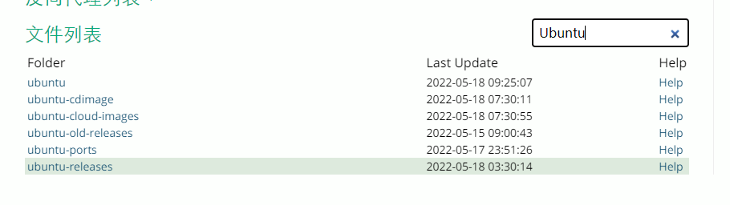
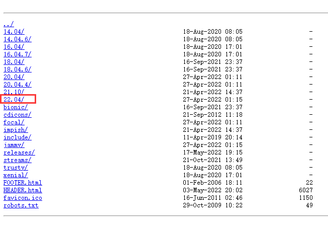
选中最新版下载
注意一般浏览器下载目录默认在C盘的Downloads下，Ubuntu的镜像文件较大，下载前注意查看C盘剩余空间
然后下好之后就可以开始烧录在U盘里了
烧录之前一定注意U盘里原来的东西是否已备份，烧录过程会将U盘清空
引导类型选择镜像文件，然后选择刚刚下载好的镜像文件
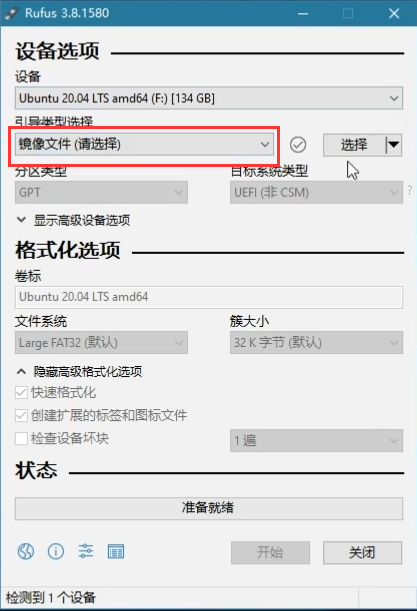
分区类型的话老电脑一般选择GPT，比较新一点的可以选择MBR 到时候发现不对回来重新烧一遍吧
然后就开始等待烧录，时间根据U盘性能不同而不同
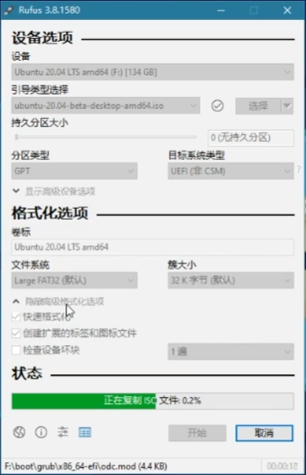
烧完之后就可以拔出U盘，这个时候准备工作就做完了。
安装步骤
打开需要安装的电脑，在开机时候进入bios界面。不同品牌的电脑进入方式各不相同，例如微星的电脑普遍是狂按del进入，华硕的电脑是F2（同一品牌不同型号的电脑也可能会有一定差异，建议百度一下自己的电脑型号）
- 在Security里面将 Secure Boot改为disabled
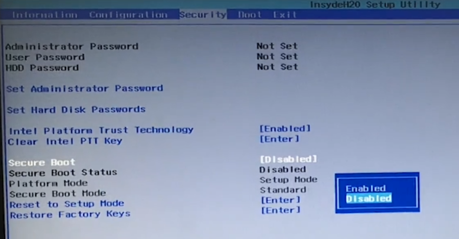
- 在boot里面将Boot Mode改为 UEFI
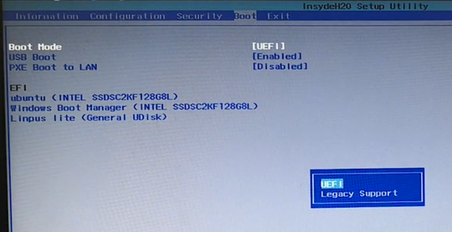
（我的华硕笔记本当时好像只用把UEFI Boot的选项改为True就行了，不是按这两步来的）
之后保存并退出。
插入烧录好的U盘，开机狂按F2（华硕），选择从什么硬盘启动，这个时候要选择自己插入U盘的型号（注意，不是U盘在电脑里自己改的名称，是型号）例如我选择了Kingston Traveler 2.0
Enter之后又来到一个选择界面，选择最上面那项（我的是Try or install Ubuntu）
然后稍等片刻即可进入安装
进入Ubuntu界面后选择Install Ubuntu
语言选择部分略过，按照自己的喜好来
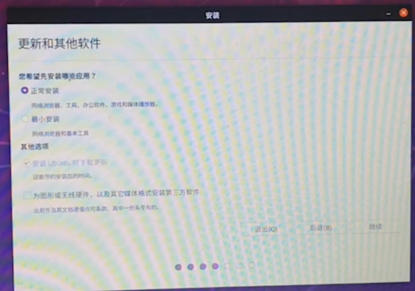
如果原来电脑上有Win10系统的话，可以选择Install Ubuntu alongside Win10，之后只用在开机的时候选择想进的系统即可。
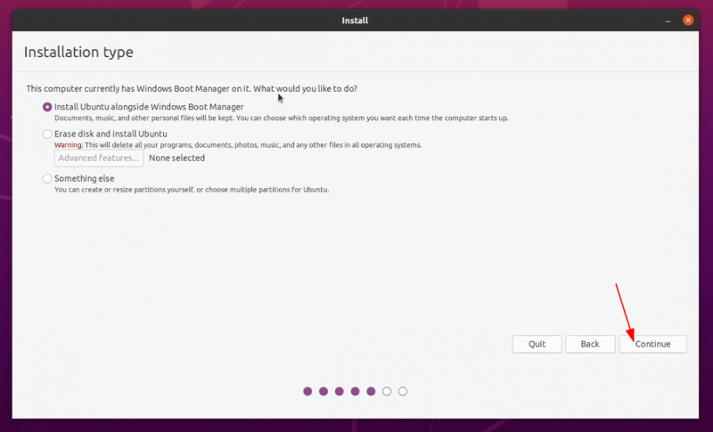
选择时区
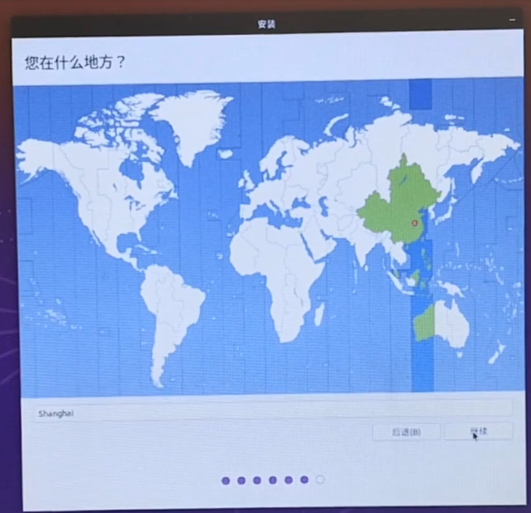
设置账户名和密码
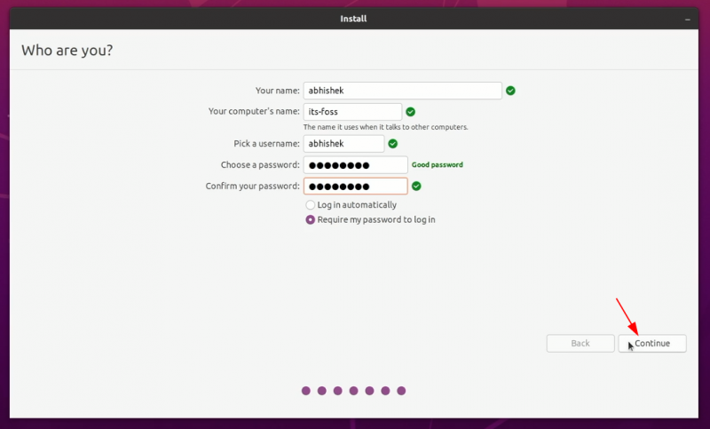
开始安装即可
大功告成
安装完成之后重启即可
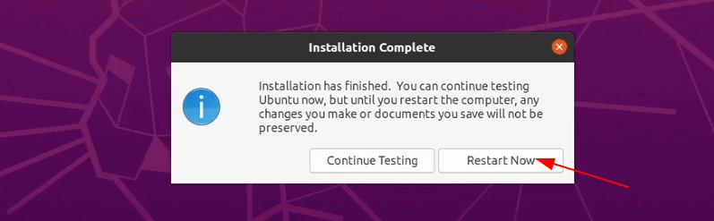
开始愉快的Ubuntu探索之旅吧
本作品采用知识共享署名-非商业性使用进行许可。
本文作者：Kotlin